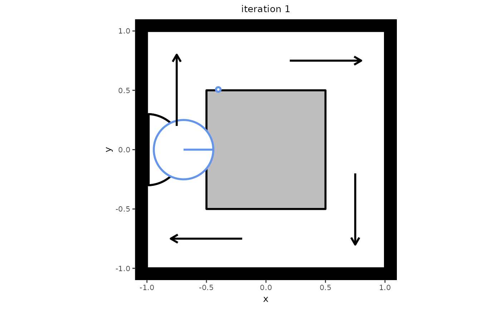

This function allows users to simulate a single state from the M4MA based on a single previous state.
Usage
# S4 method for class 'state'
simulate(
object,
model = NULL,
add_agent = FALSE,
group_size = matrix(c(1, 1), nrow = 1),
velocities = matrix(rep(c(1.5, 1, 0.5), each = 11), ncol = 3),
orientations = matrix(rep(c(72.5, 50, 32.5, 20, 10, 0, 350, 340, 327.5, 310, 287.5),
times = 3), ncol = 3),
standing_start = 0.1,
close_enough = 2,
space_between = 1.25,
stay_stopped = TRUE,
time_step = 0.5,
precomputed_edges = NULL,
many_nodes = !is.null(precomputed_edges),
plot_live = FALSE,
plot_time = 0.2,
report = FALSE,
print_iteration = FALSE,
step_report = 1,
goal_number = 5,
goal_duration = function(x) rnorm(x, 10, 2),
precompute_goal_paths = TRUE,
sort_goals = TRUE,
adaptive_goal_sorting = TRUE,
precomputed_goals = NULL,
middle_edge = FALSE,
position = NULL,
individual_differences = FALSE,
cpp = TRUE,
...
)Arguments
- object
Object of the
state-class.- model
Object of the
predped-class.- add_agent
Logical denoting whether an agent should be added to the simulation. Defaults to
FALSEand is typically handled by thesimulatefunction, where it accounts for the variablesadd_agent_afterandmax_agents.- group_size
Numeric matrix with two columns where the first column denotes the number of people in a social group and the second column the probability with which such a group is added to the simulation. Defaults to a 100% probability that individuals are added to the simulation (i.e., no social groups).
- velocities
Numeric matrix containing the change in speed for an agent whenever they move to the respective cell of this matrix. Is used to create the cell positions that the agent might move to. Defaults to a matrix in which the columns contain
1.5(acceleration),1, and0.5.- orientations
Numeric matrix containing the change in direction for an agent whenever they move to the respective cell of this matrix. Is used to create the cell positions that the agent might move to. Defaults to a matrix in which the rows contain
72.5,50,32.5,20,10,0,350,340,327.5,310,287.5(note that the larger angles are actually the negative symmetric versions of the smaller angles).- standing_start
Numeric denoting the factor of their preferred speed that agents move when they just came from standing still. Defaults to
0.1.- close_enough
Numeric denoting how close (in radii) the agent needs to be to an object in order to interact with it. Defaults to
2, meaning the agent can interact with objects at2 * radius(agent)distance away.- space_between
Numeric denoting the space that should be left between an object and the created path points for the agents (in radii). Defaults to
2.5, meaning a space of2.5 * radius(agent)is left between an object and the path points agents use in their strategy.- stay_stopped
Logical denoting whether agents will predict others that are currently not moving to remain immobile in the next iteration. Defaults to
TRUE.- time_step
Numeric denoting the number of seconds each discrete step in time should mimic. Defaults to
0.5, or half a second.- precomputed_edges
Output of
compute_edgescontaining the nodes and edges the agent can use to plan its path. Defauls toNULL, triggering the creation of these edges whenever they are needed.- many_nodes
Logical denoting whether to use the minimal number of nodes or to use many more (see
create_edges). Ignored ifprecomputed_edgesis provided. Defaults toFALSE.- plot_live
Logical denoting whether to plot each iteration while the simulation is going on. Defaults to `FALSE`.
- plot_time
Numeric denoting the amount of time (in seconds) to wait between iterations, i.e., the time between updating the plot. Defaults to `0.2`.
- report
Logical denoting whether to report whenever an agent is reorienting. Defaults to
FALSE, and is usually not needed as feedback.- print_iteration
Logical denoting whether to report each simulated iteration. Defaults to
FALSE, but can be switched off if desired.- step_report
Numeric denoting at which iteration to report the current iteration in the simulation & the number of agents present at the current iteration in the simulation. Defaults to 1, which represents each iteration to be reported.
- goal_number
Numeric, vector, or function that defines the number of goals the agents should accomplish. It's exact value is handled by
determine_values. Defaults to\(n) rnorm(n, 10, 2).- goal_duration
Numeric, vector, or function that defines the duration of the goals of the agents. Defaults to
\(n) rnorm(n, 10, 2).- precompute_goal_paths
Logical denoting whether to run the
find_pathfor each of the generated goals beforehand. Assumes that the agent does all of the goals in the order of the goal stack. Defaults toFALSE.- sort_goals
Logical denoting whether to order the goal stack in a logical way. Currently implemented in the following way. First, we select the first goal as being the one that is closest by the starting position provided in the argument
starting_position. Then, we define each of the next goals as being the one that is closest to the position of the previous goal. Defaults toTRUE.- adaptive_goal_sorting
Logical denoting whether agents have the ability to change the order of their goals adaptively throughout the simulation. Defaults to
TRUE.- precomputed_goals
List of goal stacks from which the agent can be assigned one. Defaults to
NULL, triggering the creation of goal stacks in the simulation.- middle_edge
Logical denoting whether to sample the goals from the middle of the edge of the objects in the
link[predped]{background-class}(TRUE) or to allow the goal locations to fall on all points on these edges (FALSE). Defaults toFALSE.- position
Numeric denoting the position you would like to assign to an agent if they are added to the simulation. Defaults to
NULL, making the agent start at the entrance. Note that this is an experimental feature that has not been tested yet, and therefore might not work for the moment.- individual_differences
Logical denoting whether to use the standard deviations in the parameter list to create some variation in the parameters. Defaults to
FALSE.- cpp
Logical denoting whether to use the Rcpp alternatives for several of the lower-level functions (
TRUE) or whether to use the R alternatives instead (FALSE). Defaults toTRUE.- ...
Arguments passed on to the
plotmethod (ifplot_live = TRUE).
Value
Object of the state-class.
Details
Heavily depends on update.
Many of the arguments here are either shared or derived from the upper-level
simulate function. Please refer to the
Details in its documentation to see a breakdown of the most important
arguments.
Examples
# Create a setting in which to simulate. Note that this setting also serves
# as an example of one-directional flow, which can be seen if you let the
# simulation run a bit longer.
my_background <- background(shape = rectangle(center = c(0, 0),
size = c(2, 2)),
objects = list(rectangle(center = c(0, 0),
size = c(1, 1))),
limited_access = list(segment(from = c(-1, 0.5),
to = c(-0.5, 0.5)),
segment(from = c(0.5, 1),
to = c(0.5, 0.5)),
segment(from = c(1, -0.5),
to = c(0.5, -0.5)),
segment(from = c(-0.5, -1),
to = c(-0.5, -0.5))))
# Create a model from which to simulate
my_model <- predped(setting = my_background,
archetypes = c("BaselineEuropean"))
# Create an initial state with no agents in it
my_state <- state(iteration = 0,
setting = my_background,
agents = list())
# Simulate the next state
next_state <- simulate(my_state,
model = my_model,
add_agent = TRUE)
# Check the number of agents in the next state
length(next_state@agents)
#> [1] 1
# If you wish to plot the new state, you can use the plot function.
plot(next_state)
